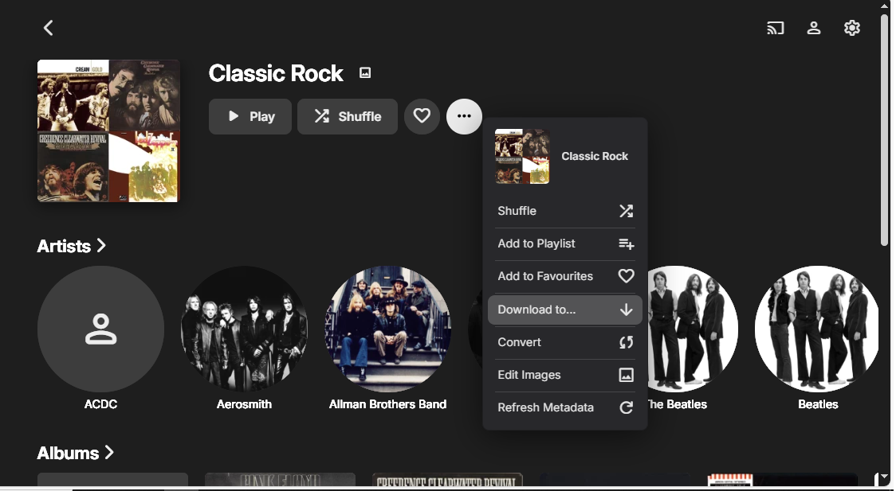
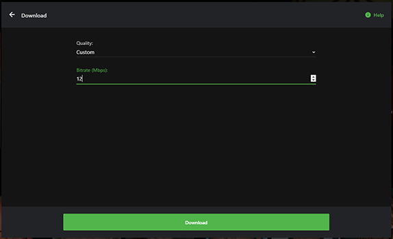
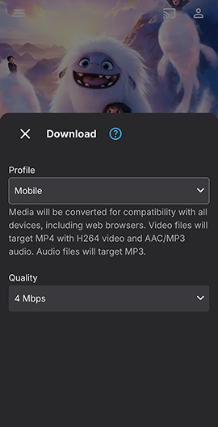

Download-Optionen
Die Emby-Client-Apps verfügen über ein Download-Symbol und zwei Schaltflächen in den Kontextmenüs, eine Download-Schaltfläche und eine Download nach...-Schaltfläche. Letztere bietet dem Benutzer die Möglichkeit, das Zielgerät auszuwählen, oder, falls Ordner-Synchronisierung konfiguriert ist und Zugriff auf das Benutzerkonto gewährt wird, den Zielserverordner, in den Medien kopiert werden sollen.
Benutzerzugriffsrechte und zuvor authentifizierte Geräte des Benutzers bestimmen, welche Ziele für den Download verfügbar sind.
Die Download-Schaltfläche wird in allen Emby-Client-Apps angezeigt, die Downloads unterstützen.
Die Download nach-Schaltfläche wird angezeigt, wenn der Benutzer mindestens eine Client-App hat, die Downloads unterstützt, oder wenn dem Benutzer Zugriff auf einen Ordner-Sync Serverordner gewährt wurde.
In allen Fällen gibt es Möglichkeiten, die Qualität des Downloads sowie andere Optionen, die vom Medientyp abhängen, auszuwählen.
Note
Die Download-Schaltfläche in der Emby-Web-App ist anders und gehört nicht zur Funktion Downloads & Sync. Die Schaltfläche, die für den Einzelobjekt-Download vorgesehen ist, nutzt die Funktionalität des Webbrowsers, um das Objekt ohne Konvertierung in den Standard-Download-Ordner des Browsers herunterzuladen.
Download
Download-Symbol

Kontextmenü-Download-Optionen
Kontextmenü für eine Film-Bibliothek

Die Download-Schaltfläche bietet die gleiche Funktionalität wie das Download-Symbol.
Ähnliche Optionen sind auf Saison- oder Episodenebene oder für Filme usw. verfügbar.
Download nach...
Die Download nach...-Option ermöglicht es dem Benutzer, das Ziel für den Download anzugeben. Dies ist ein Beispiel, das die Optionen zeigt, um zu verschiedenen authentifizierten Geräten des Benutzers herunterzuladen.

Nahezu alles kann heruntergeladen werden, einschließlich Genres, Sammlungen und Wiedergabelisten, beispielsweise für ein Musikgenre:

Dies ist ein Beispiel für die Auswahl der gesamten Bibliothek vom Startbildschirm aus.

Und für eine bestimmte Staffel einer TV-Show
Das folgende ist ein Beispiel eines Download nach...-Menüs in der Emby-Web App, das ein Download-Ziel zur Emby-Theater für Windows App zeigt.

Und im folgenden Beispiel hat der Benutzer Zugriff auf die konfigurierten Ordner-Sync-Ordner.

Note
Beim Erstellen eines Downloads zu einem anderen Gerät oder einer App führt der Download-Job zunächst eine gewünschte Konvertierung durch und kann dann auf das Gerät übertragen werden. Wenn die Ziel-Emby-Client-App nicht läuft, bleibt der Download-Job in diesem Zustand, bis die App läuft und das Gerät für den Server zugänglich ist.
Download-Einstellungen
Es gibt Download-Einstellungen für die Emby-Apps und den Emby-Server für alle Downloads sowie spezielle Download-Einstellungen für bestimmte Download-Aufträge.
Download-Einstellungen - Emby Apps
Das Folgende zeigt die Optionen für die Emby für Android App. Ähnliche Optionen sind in der Emby für iOS App verfügbar.

Das Folgende zeigt die Optionen für die Emby-Theater für Windows App.
Download-Einstellungen - Emby Server
Das Folgende zeigt die Optionen für den Emby-Server, die in den Emby-Web-Einstellungen im Bereich Geräte / Downloads festgelegt werden können.
Spezifische Download-Einstellungen
Um einen Download zu starten, klicken Sie auf das verfügbare Download-Symbol/-Schaltfläche. Sie sehen dann einen Dialog, in dem Sie die gewünschte Download-Qualität und bei einigen Apps das Profil für die Konvertierung auswählen können. Der Emby-Server wird Medien so konvertieren, dass sie in einem kompatiblen Format auf das Gerät heruntergeladen werden können. Sie können zwischen mehreren Qualitätsoptionen wählen oder die Originalqualität erzwingen.

Note
Das Erzwingen der Originalqualität kann zu einem Download führen, der auf dem Gerät nicht abspielbar ist.
Benutzerdefinierte Qualität ermöglicht es Ihnen, Ihre gewünschte Bitrate einzustellen:

Für TV-Shows gibt es zusätzliche Optionen, um Downloads nur auf nicht gespielte Episoden zu beschränken und um neue Episoden automatisch herunterzuladen. Es gibt auch eine Option, um ein Limit für die Anzahl der Downloads festzulegen.
In einigen Apps gibt es eine Option zur Auswahl eines Profils.

mit einem Dropdown-Menü für die Liste der verfügbaren Download-Profile:

Es ist auch möglich, ein benutzerdefiniertes Profil zu verwenden


Ein Klick auf die Download-Schaltfläche würde dann einen Download-Auftrag erstellen. Siehe Download-Jobs.
Löschen von Downloads
Heruntergeladene Elemente können direkt auf dem Gerät im Bereich Downloads entfernt werden.

Ordner-Sync
Ordner-Synchronisierung, die das Ordner-Sync-Plugin erfordert, ermöglicht es Ihnen, Inhalte in Ordner und auf externe Festplatten zu kopieren, sowohl zur Sicherung als auch zur Archivierung in mehreren Auflösungen. Die eigentliche Ordner-Synchronisierung wird durch das Erstellen eines Download-Auftrags über die Download nach...-Option erreicht.
Wenn Inhalte in mehreren Auflösungen archiviert werden, wählen Emby-Apps automatisch die Version, die für sie am effizientesten ist. Dies hilft, den Stress auf der CPU Ihres Servers zu verringern.
Das Folgende zeigt, wie es aussieht, wenn ein Element abgespielt wird, das eine synchronisierte Kopie hat.

Für weitere Informationen siehe Ordner-Sync.
Erstellen von Download-Jobs
Das Obige zeigte, wie ein Download initiiert werden kann. Weitere Informationen zum Anzeigen und Verwalten der Download-Jobs finden Sie unter Download-Jobs.
Benutzerzugriff
Der Zugriff auf die Download-Funktion kann individuell für jeden Benutzer verwaltet werden.

Für weitere Informationen siehe Benutzer.
Es gibt zusätzliche Benutzerzugriffsanforderungen für die Ordner-Synchronisierung.